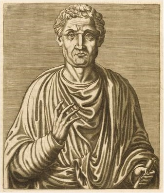

Welcome to the Mathematical World!
Boethius
Transmitter of Greek Arithmetic to Latin Europe
Anicius Manlius Severinus Boethius (c. 480–524 CE) was a Roman philosopher, statesman, and mathematician whose works became the cornerstone of medieval mathematical education. His treatise De Institutione Arithmetica adapted Nicomachus’ Greek arithmetic into Latin, preserving number theory, proportions, and classifications for Western Europe.
Boethius’ text was structured for pedagogical clarity, explaining properties of numbers, ratio, and proportion, often with philosophical commentary linking arithmetic to harmony and cosmic order. He also wrote De Institutione Musica, tying numerical ratios to musical intervals, thus transmitting the Pythagorean tradition of harmonics.
Although not an original discoverer, Boethius’ role as a transmitter was crucial: his works formed the basis of the quadrivium (arithmetic, geometry, music, and astronomy) in medieval education. His clear expositions allowed generations of scholars to access Greek mathematics despite the loss of original manuscripts.
Boethius also attempted, though incompletely, to translate and reconcile Greek philosophical works, including those of Plato and Aristotle. In mathematics, his influence ensured that Latin Europe retained access to Greek arithmetic and harmonic theory until the revival of classical texts in the Renaissance.
Boethius exemplifies the pivotal role of transmission in mathematical history: he preserved and systematized the knowledge of previous generations, providing the foundation for medieval and later European scholarship.